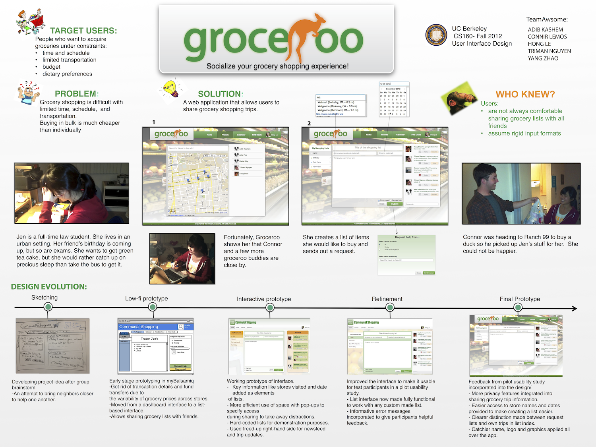
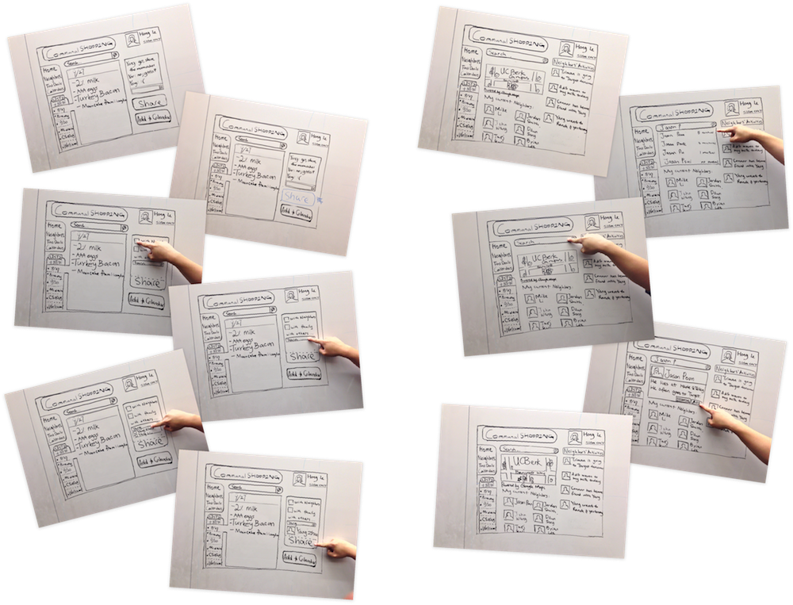
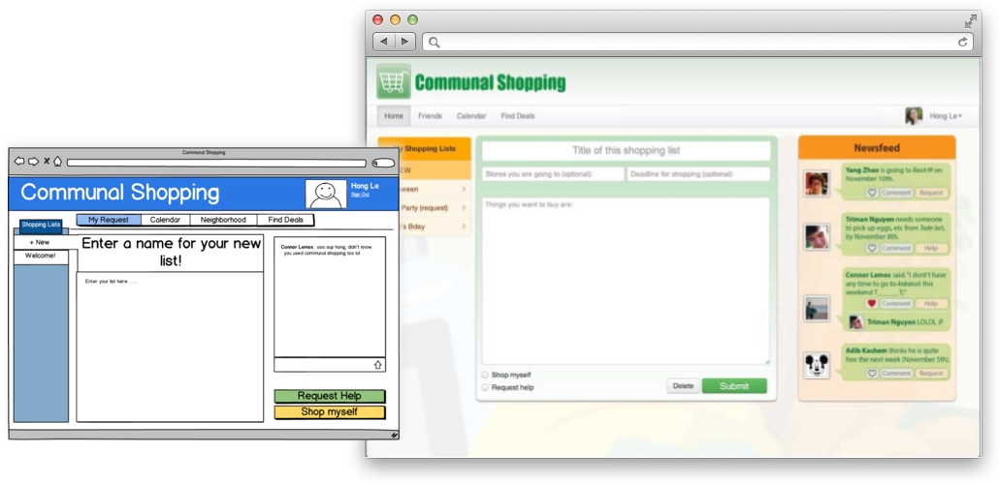
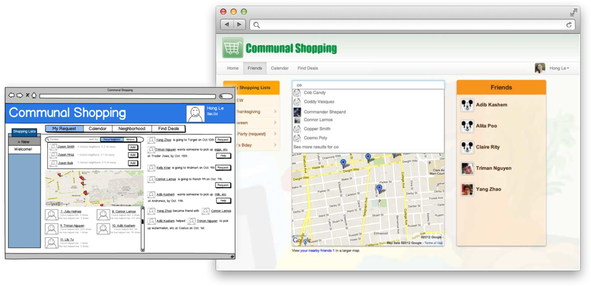
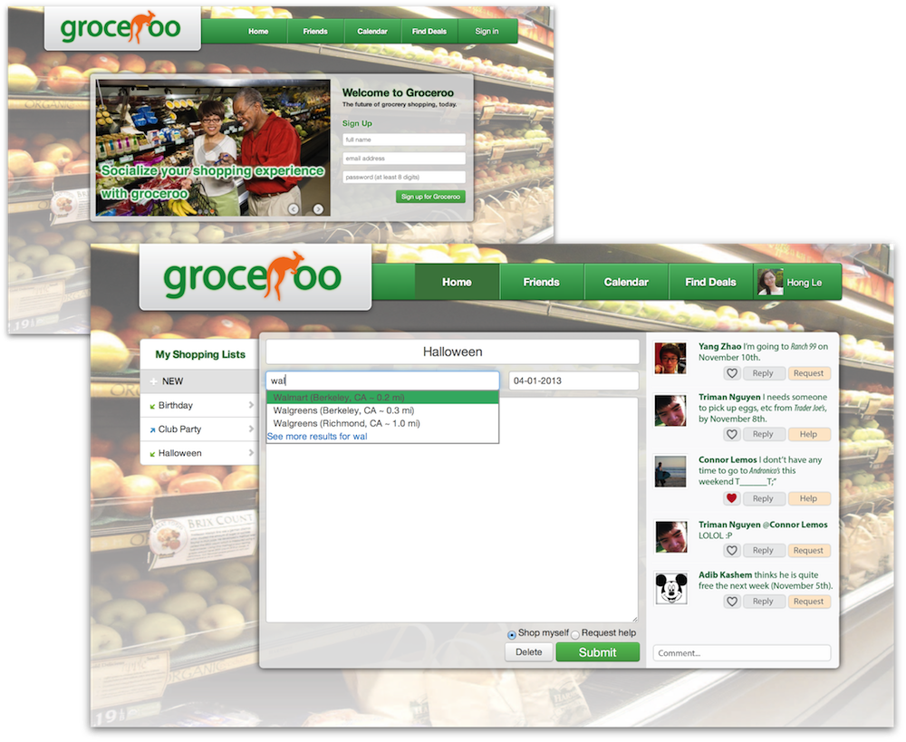
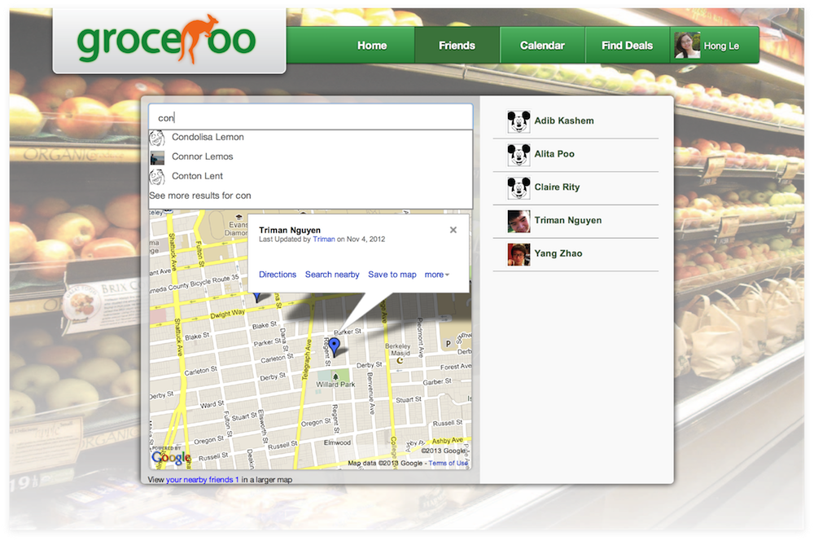
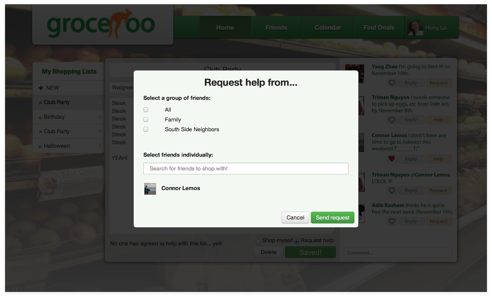
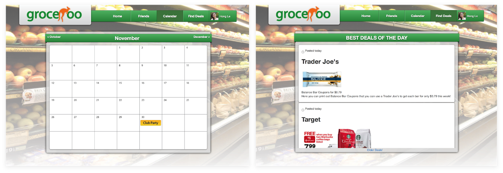

Problem and Solution Overview
Our users would like to accomplish the task of periodically acquiring their groceries under various constraints. These constraints include their budget, schedule and availability, limited transportation options and dietary preferences among other things. Our target users are looking shop for fresh groceries according to their dietary preferences, but the problem they face is that doing so often involves having to visit various shops and spending a lot of time on shopping or not being able to reach certain stores due to their range being limited by the transportation options available to them. Groceroo is a web application that socializes the grocery shopping experience and it is our answer to the problem. It features the ability to let users share their grocery lists with others in a location based communal grocery shopping network and makes acquiring groceries more time-efficient for everyone in the network.
Target User Group
The target users for this web app are working parents, car-less college students, avid cooks, and budget shoppers. Parents, in particular, have busy schedules and a lot of mouths to feed. Between a busy work schedule and so many meals to make, making a short, fruitful trip to the grocery store can be very difficult. For any college student, especially those studying in an urban setting, trips to the store may require bike, train, and bus trips. These students can't always afford for a trip to the grocery store to be too long, so shortening the travel time or reducing the number of trips could catching up on precious sleep. These users may be interested in the app because it will help them find neighbors with cars who can trade groceries runs for cash or favors.
Design Evolution
Group Brainstorm to Initial Sketches

Initial Sketches to Lo-fi Prototype, and then Interactive Prototype
Lo-fi Version VS Interactive Version


Final Interface
Functionality
The main functionality of Groceroo is centered around sharing grocery lists with other users in order to help them collaborate on grocery trips. The first operation any user will perform is on the initial sign-in page.
A successful sign in will take users to the home page, where one navigates, creates, and edits list. The most obvious and most important operation of Groceroo is creating a grocery list.

Beyond being able to create and submit a user's own grocery list, users can collect friends in their area in order to expand their local community.Friends can be found in one of two ways according to the user's preference: direct search by name, or a map search showing location information.

Instead of creating lists for their own grocery trips, users can also create a list and request that friends or neighbors pick up the items.

Both types of lists can be managed and organized in the calendar page.
Finally, users can check for special deals and grocery ads via the find deals page.

Implementation
The implementation for the front-end prototype of Groceroo was primarily done through HTML, CSS, JavaScript, and JQuery. Additional features were made with plugins such as the Bootstrap library, DatePicker, Google Maps, a slider function from Nathan Searles, and of course Google images. Photoshop was also used for some of the mock ups, logos, and UI kits.